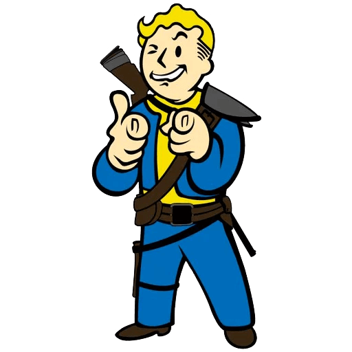

-

O que posso levar?
Confira a lista de items permitidos dentro do abrigo.
-

Manual do fim do mundo
Dicas de como sobreviver no novo mundo.
-
Beba como se fosse o fim do mundo!
O mundo acabou mas a bebida não! Comemore como se não houvesse amanhã!
-
Recompensas
Confira os espólios mais requisitos mundo afora.
-

Ameaças
Lista de principais inimigos
-

Como se comportar
Evite problemas e conheça as regras do abrigo.